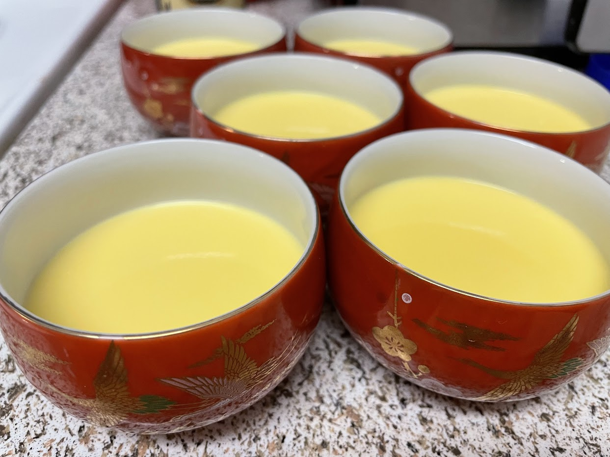
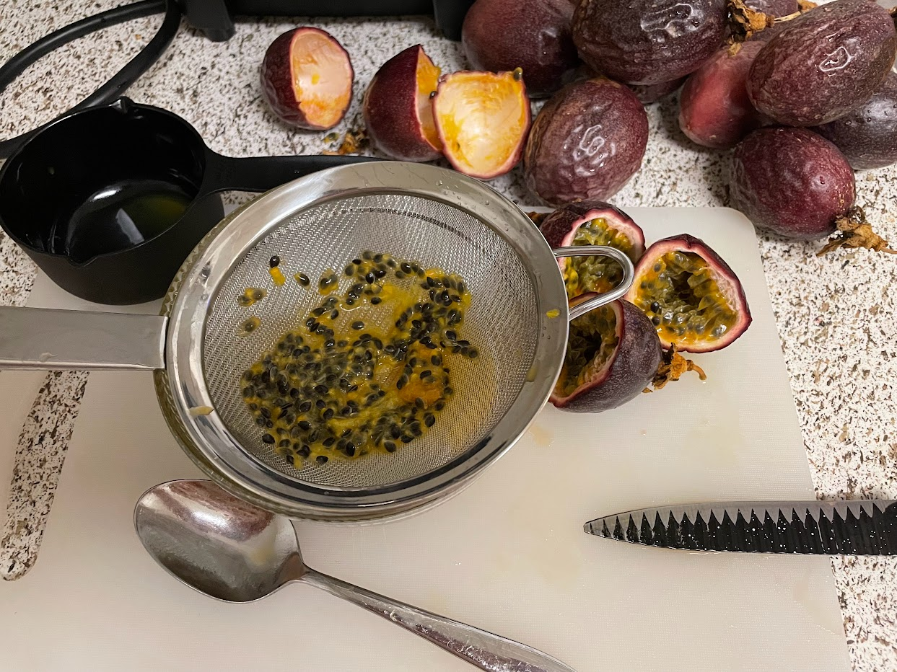
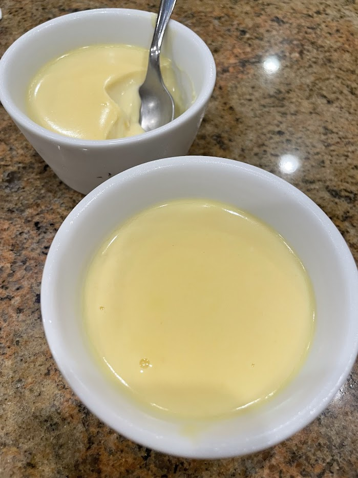

Passion fruit posset
Source: I developed this recipe with my grandma, Roseanne Odenwalder (who is an amazing cook), because her neighbors gave us a ton of homegrown purple passion fruits.
This recipe makes about 6 small ramekins. This is what they look like just after being poured, but they need to be refrigerated so they set.
Straining passion fruit juice to remove seeds and pulp, so that the final product is homogeneous and smooth. I needed about 10 passion fruits to get 1/2 cup of juice.
Delicious passion fruit possets that I made with my grandma
Ingredients
- 1 pint (2 cups) heavy cream
- 1/2 cup sugar
- 1 tsp vanilla extract
- 1/2 cup seedless passion fruit juice (takes ~10 passion fruits)
- Optional garnishes (choose one): mint leaves, dark chocolate shavings, orange zest, passion fruit pulp, saffron, etc.
Instructions
Mix cream, sugar, and vanilla. Simmer while stirring for 3-5 minutes. Take it off the heat, let it cool briefly, then stir in fruit juice and pour into cups/ramekins. Refrigerate for several hours, ideally overnight.
Notes
The citric acid in passion fruit curdles and thickens the cream. Therefore, this recipe also works if you use another sour fruit juice like lemon, lime, orange, or tangerine. Just make sure to strain the pulp out, and adjust the amount of juice according to the acidity.